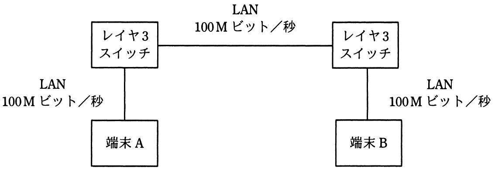

2台の端末と2台のレイヤ3スイッチが図のようにLANで接続されているとき，端末Aがフレームを送信し始めてから，端末Bがそのフレームを受信し終わるまでの時間は，およそ何ミリ秒か。
〔条件〕
フレーム長：1,000バイト
LANの伝送速度：100Mビット／秒
レイヤ3スイッチにおける1フレームの処理時間：0.2ミリ秒
レイヤ3スイッチは，1フレームの受信を完了してから送信を開始する。

ア 0.24
イ 0.43
ウ 0.48
エ 0.64